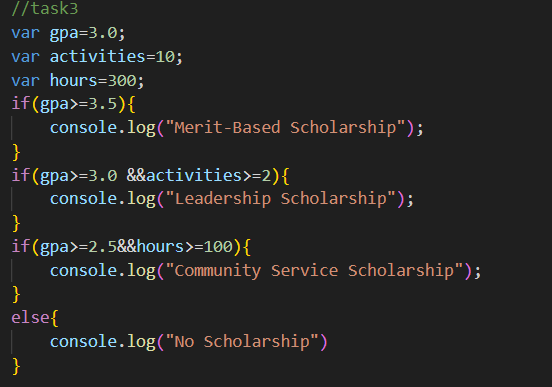

3. Scenario: Academic Scholarship Eligibility
----------------------------------------------
Context: A university offers scholarships to students based on their GPA and extracurricular involvement:
Merit-Based Scholarship: Requires a GPA of 3.5 or higher.
Leadership Scholarship: Requires active participation in at least two extracurricular activities and a GPA of 3.0 or higher.
Community Service Scholarship: Requires 100 or more hours of community service and a GPA of 2.5 or higher.
Question: Given variables that store a student's GPA, number of extracurricular activities, and community service hours, use conditional statements to determine which scholarships the student is eligible for. Consider scenarios where a student qualifies for multiple scholarships or none.

Return to home